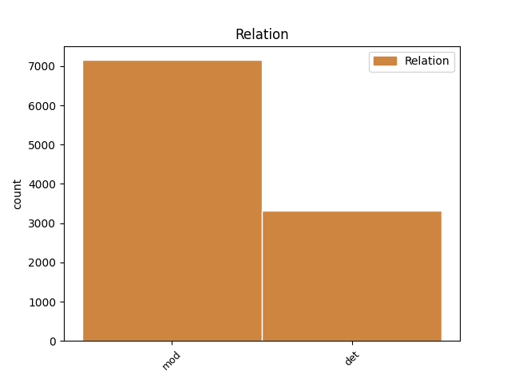
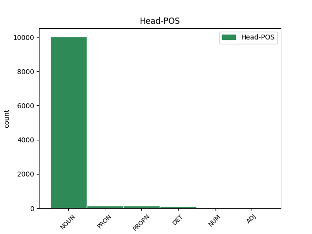
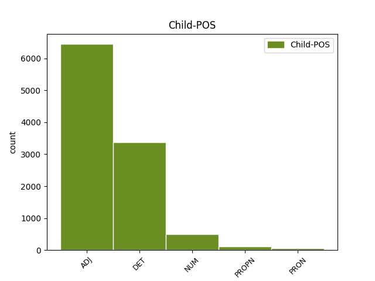

Distribution of features within this leaf



Agreement Rules sorted by frequency.
- When the dependent token is the modifer(mod) of the head token, and the head token is NOUN and the dependent token is ADJ.
1 A _ _ _ _ 0 _ _ _
2 dnes _ _ _ _ 0 _ _ _
3 jsem _ _ _ _ 0 _ _ _
4 na _ _ _ _ 0 _ _ _
5 tvá _ _ _ _ 0 _ _ _
6 bedra _ _ _ _ 0 _ _ _
7 přidal _ _ _ _ 0 _ _ _
8 ještě _ _ _ _ 0 _ _ _
9 další další ADJ AAFS4----1A---- Case=Acc|Degree=Pos|Gender=Fem|Number=Sing|Polarity=Pos 10 mod _ _
10 zátěž zátěž NOUN NNFS4-----A---- Case=Acc|Gender=Fem|Number=Sing|Polarity=Pos 0 _ _ _
11 . _ _ _ _ 0 _ _ _
1 Aby _ _ _ _ 0 _ _ _
2 bys _ _ _ _ 0 _ _ _
3 toto _ _ _ _ 0 _ _ _
4 břímě _ _ _ _ 0 _ _ _
5 a _ _ _ _ 0 _ _ _
6 zodpovědnost _ _ _ _ 0 _ _ _
7 unesl _ _ _ _ 0 _ _ _
8 , _ _ _ _ 0 _ _ _
9 chci _ _ _ _ 0 _ _ _
10 ti _ _ _ _ 0 _ _ _
11 dát _ _ _ _ 0 _ _ _
12 i _ _ _ _ 0 _ _ _
13 tento _ _ _ _ 0 _ _ _
14 klíč _ _ _ _ 0 _ _ _
15 a _ _ _ _ 0 _ _ _
16 svěřit _ _ _ _ 0 _ _ _
17 tajemství _ _ _ _ 0 _ _ _
18 své svůj DET P8FS2---------1 Case=Gen|Gender=Fem|Number=Sing|Poss=Yes|PronType=Prs|Reflex=Yes 19 det _ _
19 energie energie NOUN NNFS2-----A---- Case=Gen|Gender=Fem|Number=Sing|Polarity=Pos 0 _ _ _
20 a _ _ _ _ 0 _ _ _
21 úspěchu _ _ _ _ 0 _ _ _
22 . _ _ _ _ 0 _ _ _
23 " _ _ _ _ 0 _ _ _
1 Když _ _ _ _ 0 _ _ _
2 oslava _ _ _ _ 0 _ _ _
3 skončila _ _ _ _ 0 _ _ _
4 a _ _ _ _ 0 _ _ _
5 s _ _ _ _ 0 _ _ _
6 nadcházejícím _ _ _ _ 0 _ _ _
7 víkendem _ _ _ _ 0 _ _ _
8 se _ _ _ _ 0 _ _ _
9 budova _ _ _ _ 0 _ _ _
10 vyprázdnila _ _ _ _ 0 _ _ _
11 , _ _ _ _ 0 _ _ _
12 vyndal _ _ _ _ 0 _ _ _
13 otec _ _ _ _ 0 _ _ _
14 ze _ _ _ _ 0 _ _ _
15 svého _ _ _ _ 0 _ _ _
16 svazku _ _ _ _ 0 _ _ _
17 jeden jeden NUM ClIS4---------- Animacy=Inan|Case=Acc|Gender=Masc|Number=Sing|NumForm=Word|NumType=Card|NumValue=1,2,3 19 mod _ _
18 nenápadný _ _ _ _ 0 _ _ _
19 klíček klíček NOUN NNIS4-----A---- Animacy=Inan|Case=Acc|Gender=Masc|Number=Sing|Polarity=Pos 0 _ _ _
20 a _ _ _ _ 0 _ _ _
21 řekl _ _ _ _ 0 _ _ _
22 : _ _ _ _ 0 _ _ _
1 Starý _ _ _ _ 0 _ _ _
2 chudý chudý ADJ AAMS1----1A---- Animacy=Anim|Case=Nom|Degree=Pos|Gender=Masc|Number=Sing|Polarity=Pos 3 mod _ _
3 Řek Řek PROPN NNMS1-----A---- Animacy=Anim|Case=Nom|Gender=Masc|NameType=Nat|Number=Sing|Polarity=Pos 0 _ _ _
4 se _ _ _ _ 0 _ _ _
5 vydal _ _ _ _ 0 _ _ _
6 do _ _ _ _ 0 _ _ _
7 kostela _ _ _ _ 0 _ _ _
8 . _ _ _ _ 0 _ _ _
1 A _ _ _ _ 0 _ _ _
2 až _ _ _ _ 0 _ _ _
3 tu _ _ _ _ 0 _ _ _
4 vůbec _ _ _ _ 0 _ _ _
5 nebudu _ _ _ _ 0 _ _ _
6 , _ _ _ _ 0 _ _ _
7 přidám _ _ _ _ 0 _ _ _
8 ti _ _ _ _ 0 _ _ _
9 i _ _ _ _ 0 _ _ _
10 to ten DET PDNS4---------- Case=Acc|Gender=Neut|Number=Sing|PronType=Dem 0 _ _ _
11 poslední poslední ADJ AANS4----1A---- Case=Acc|Degree=Pos|Gender=Neut|Number=Sing|Polarity=Pos 10 mod _ SpaceAfter=No
12 . _ _ _ _ 0 _ _ _
1 Jak _ _ _ _ 0 _ _ _
2 se _ _ _ _ 0 _ _ _
3 to ten DET PDNS1---------- Case=Nom|Gender=Neut|Number=Sing|PronType=Dem 0 _ _ _
4 všechno všechen DET PLNS1---------- Case=Nom|Gender=Neut|Number=Sing|PronType=Tot 3 det _ _
5 seběhlo _ _ _ _ 0 _ _ _
6 , _ _ _ _ 0 _ _ _
7 si _ _ _ _ 0 _ _ _
8 už _ _ _ _ 0 _ _ _
9 později _ _ _ _ 0 _ _ _
10 nemohla _ _ _ _ 0 _ _ _
11 přesně _ _ _ _ 0 _ _ _
12 vzpomenout _ _ _ _ 0 _ _ _
13 . _ _ _ _ 0 _ _ _
1 Vy ty PRON PP-P5--2------- Case=Voc|Number=Plur|Person=2|PronType=Prs 3 mod _ _
2 protivní _ _ _ _ 0 _ _ _
3 žebráci žebrák NOUN NNMP5-----A---- Animacy=Anim|Case=Voc|Gender=Masc|Number=Plur|Polarity=Pos 0 _ _ _
4 a _ _ _ _ 0 _ _ _
5 povaleči _ _ _ _ 0 _ _ _
6 z _ _ _ _ 0 _ _ _
7 města _ _ _ _ 0 _ _ _
8 , _ _ _ _ 0 _ _ _
9 já _ _ _ _ 0 _ _ _
10 vám _ _ _ _ 0 _ _ _
11 ukážu _ _ _ _ 0 _ _ _
12 ! _ _ _ _ 0 _ _ _
13 " _ _ _ _ 0 _ _ _
14 zuřil _ _ _ _ 0 _ _ _
15 staroch _ _ _ _ 0 _ _ _
16 . _ _ _ _ 0 _ _ _
1 Paní _ _ _ _ 0 _ _ _
2 A A PROPN NNFS1-----A---8 Abbr=Yes|Case=Nom|Gender=Fem|Number=Sing|Polarity=Pos 4 mod _ SpaceAfter=No
3 . _ _ _ _ 0 _ _ _
4 C C PROPN NNFS1-----A---8 Abbr=Yes|Case=Nom|Gender=Fem|Number=Sing|Polarity=Pos 0 _ _ _
5 . _ _ _ _ 0 _ _ _
6 se _ _ _ _ 0 _ _ _
7 zastavila _ _ _ _ 0 _ _ _
8 a _ _ _ _ 0 _ _ _
9 pozvedla _ _ _ _ 0 _ _ _
10 hlavu _ _ _ _ 0 _ _ _
11 k _ _ _ _ 0 _ _ _
12 rozkvetlé _ _ _ _ 0 _ _ _
13 koruně _ _ _ _ 0 _ _ _
14 . _ _ _ _ 0 _ _ _
1 " _ _ _ _ 0 _ _ _
2 Ale _ _ _ _ 0 _ _ _
3 , _ _ _ _ 0 _ _ _
4 " _ _ _ _ 0 _ _ _
5 zaúpěla _ _ _ _ 0 _ _ _
6 žena _ _ _ _ 0 _ _ _
7 , _ _ _ _ 0 _ _ _
8 " _ _ _ _ 0 _ _ _
9 k _ _ _ _ 0 _ _ _
10 čemu co PRON PQ--3---------- Animacy=Inan|Case=Dat|PronType=Int,Rel 0 _ _ _
11 jinému jiný ADJ AANS3----1A---- Case=Dat|Degree=Pos|Gender=Neut|Number=Sing|Polarity=Pos 10 mod _ _
12 by _ _ _ _ 0 _ _ _
13 oči _ _ _ _ 0 _ _ _
14 byly _ _ _ _ 0 _ _ _
15 , _ _ _ _ 0 _ _ _
16 když _ _ _ _ 0 _ _ _
17 ne _ _ _ _ 0 _ _ _
18 pro _ _ _ _ 0 _ _ _
19 pláč _ _ _ _ 0 _ _ _
20 ? _ _ _ _ 0 _ _ _
21 " _ _ _ _ 0 _ _ _
1 " _ _ _ _ 0 _ _ _
2 Tak _ _ _ _ 0 _ _ _
3 si _ _ _ _ 0 _ _ _
4 představte _ _ _ _ 0 _ _ _
5 , _ _ _ _ 0 _ _ _
6 paní _ _ _ _ 0 _ _ _
7 Běhounková _ _ _ _ 0 _ _ _
8 , _ _ _ _ 0 _ _ _
9 tohle _ _ _ _ 0 _ _ _
10 je _ _ _ _ 0 _ _ _
11 ten ten DET PDMS1---------- Animacy=Anim|Case=Nom|Gender=Masc|Number=Sing|PronType=Dem 13 det _ _
12 novej _ _ _ _ 0 _ _ _
13 Pražák Pražák PROPN NNMS1-----A---- Animacy=Anim|Case=Nom|Gender=Masc|NameType=Nat|Number=Sing|Polarity=Pos 0 _ _ _
14 , _ _ _ _ 0 _ _ _
15 co _ _ _ _ 0 _ _ _
16 koupil _ _ _ _ 0 _ _ _
17 od _ _ _ _ 0 _ _ _
18 Patery _ _ _ _ 0 _ _ _
19 chalupu _ _ _ _ 0 _ _ _
20 ! _ _ _ _ 0 _ _ _
21 " _ _ _ _ 0 _ _ _
1 Obec obec NOUN NNFS1-----A---- Case=Nom|Gender=Fem|Number=Sing|Polarity=Pos 0 _ _ _
2 Krásná Krásná PROPN NNFS1-----A---- Case=Nom|Gender=Fem|NameType=Geo|Number=Sing|Polarity=Pos 1 mod _ _
3 se _ _ _ _ 0 _ _ _
4 jistě _ _ _ _ 0 _ _ _
5 už _ _ _ _ 0 _ _ _
6 brzy _ _ _ _ 0 _ _ _
7 stane _ _ _ _ 0 _ _ _
8 předměstím _ _ _ _ 0 _ _ _
9 okresního _ _ _ _ 0 _ _ _
10 města _ _ _ _ 0 _ _ _
11 , _ _ _ _ 0 _ _ _
12 zatím _ _ _ _ 0 _ _ _
13 však _ _ _ _ 0 _ _ _
14 žije _ _ _ _ 0 _ _ _
15 svým _ _ _ _ 0 _ _ _
16 samostatným _ _ _ _ 0 _ _ _
17 životem _ _ _ _ 0 _ _ _
18 . _ _ _ _ 0 _ _ _
1 " _ _ _ _ 0 _ _ _
2 No _ _ _ _ 0 _ _ _
3 , _ _ _ _ 0 _ _ _
4 můj můj DET PSMS5-S1------- Animacy=Anim|Case=Voc|Gender=Masc|Number=Sing|Number[psor]=Sing|Person=1|Poss=Yes|PronType=Prs 5 det _ _
5 milý milý ADJ AAMS5----1A---- Animacy=Anim|Case=Voc|Degree=Pos|Gender=Masc|Number=Sing|Polarity=Pos 0 _ _ _
6 , _ _ _ _ 0 _ _ _
7 tvoje _ _ _ _ 0 _ _ _
8 tělo _ _ _ _ 0 _ _ _
9 je _ _ _ _ 0 _ _ _
10 v _ _ _ _ 0 _ _ _
11 pořádku _ _ _ _ 0 _ _ _
12 . _ _ _ _ 0 _ _ _
1 Rozhodl _ _ _ _ 0 _ _ _
2 se _ _ _ _ 0 _ _ _
3 tedy _ _ _ _ 0 _ _ _
4 , _ _ _ _ 0 _ _ _
5 že _ _ _ _ 0 _ _ _
6 se _ _ _ _ 0 _ _ _
7 o _ _ _ _ 0 _ _ _
8 svých _ _ _ _ 0 _ _ _
9 pochybnostech _ _ _ _ 0 _ _ _
10 přesvědčí _ _ _ _ 0 _ _ _
11 , _ _ _ _ 0 _ _ _
12 a _ _ _ _ 0 _ _ _
13 poslal _ _ _ _ 0 _ _ _
14 syna _ _ _ _ 0 _ _ _
15 k _ _ _ _ 0 _ _ _
16 jednomu _ _ _ _ 0 _ _ _
17 nesmírně _ _ _ _ 0 _ _ _
18 bohatému bohatý ADJ AAMS3----1A---- Animacy=Anim|Case=Dat|Degree=Pos|Gender=Masc|Number=Sing|Polarity=Pos 19 mod _ _
19 příbuznému příbuzný ADJ AAMS3----1A---- Animacy=Anim|Case=Dat|Degree=Pos|Gender=Masc|Number=Sing|Polarity=Pos 0 _ _ _
20 , _ _ _ _ 0 _ _ _
21 který _ _ _ _ 0 _ _ _
22 byl _ _ _ _ 0 _ _ _
23 v _ _ _ _ 0 _ _ _
24 celé _ _ _ _ 0 _ _ _
25 rodině _ _ _ _ 0 _ _ _
26 považován _ _ _ _ 0 _ _ _
27 za _ _ _ _ 0 _ _ _
28 milovníka _ _ _ _ 0 _ _ _
29 života _ _ _ _ 0 _ _ _
30 . _ _ _ _ 0 _ _ _
1 Všechny všechen DET PLMP4---------- Animacy=Anim|Case=Acc|Gender=Masc|Number=Plur|PronType=Tot 2 det _ _
2 nás já PRON PP-P4--1------- Case=Acc|Number=Plur|Person=1|PronType=Prs 0 _ _ _
3 povraždí _ _ _ _ 0 _ _ _
4 ! _ _ _ _ 0 _ _ _
1 " _ _ _ _ 0 _ _ _
2 V _ _ _ _ 0 _ _ _
3 garáži _ _ _ _ 0 _ _ _
4 leží _ _ _ _ 0 _ _ _
5 jedna jeden NUM ClFS1---------- Case=Nom|Gender=Fem|Number=Sing|NumForm=Word|NumType=Card|NumValue=1,2,3 0 _ _ _
6 stará starý ADJ AAFS1----1A---- Case=Nom|Degree=Pos|Gender=Fem|Number=Sing|Polarity=Pos 5 mod _ SpaceAfter=No
7 , _ _ _ _ 0 _ _ _
8 tu _ _ _ _ 0 _ _ _
9 si _ _ _ _ 0 _ _ _
10 můžeš _ _ _ _ 0 _ _ _
11 vzít _ _ _ _ 0 _ _ _
12 . _ _ _ _ 0 _ _ _
13 " _ _ _ _ 0 _ _ _
1 Jak _ _ _ _ 0 _ _ _
2 to _ _ _ _ 0 _ _ _
3 tak _ _ _ _ 0 _ _ _
4 slyším _ _ _ _ 0 _ _ _
5 , _ _ _ _ 0 _ _ _
6 můžu _ _ _ _ 0 _ _ _
7 s _ _ _ _ 0 _ _ _
8 klidným _ _ _ _ 0 _ _ _
9 svědomím _ _ _ _ 0 _ _ _
10 říct _ _ _ _ 0 _ _ _
11 , _ _ _ _ 0 _ _ _
12 že _ _ _ _ 0 _ _ _
13 ostatním _ _ _ _ 0 _ _ _
14 lidem _ _ _ _ 0 _ _ _
15 dopřeji _ _ _ _ 0 _ _ _
16 ještě _ _ _ _ 0 _ _ _
17 míň _ _ _ _ 0 _ _ _
18 , _ _ _ _ 0 _ _ _
19 než _ _ _ _ 0 _ _ _
20 vy ty PRON PP-P1--2------- Case=Nom|Number=Plur|Person=2|PronType=Prs 0 _ _ _
21 dva dva NUM ClMP1---------- Animacy=Anim|Case=Nom|Gender=Masc|Number=Plur|NumForm=Word|NumType=Card|NumValue=1,2,3 20 mod _ SpaceAfter=No
22 . _ _ _ _ 0 _ _ _
23 " _ _ _ _ 0 _ _ _
1 Všichni všechen DET PLMP1---------- Animacy=Anim|Case=Nom|Gender=Masc|Number=Plur|PronType=Tot 0 _ _ _
2 tři tři NUM ClMP1---------- Animacy=Anim|Case=Nom|Gender=Masc|Number=Plur|NumForm=Word|NumType=Card|NumValue=1,2,3 1 mod _ _
3 se _ _ _ _ 0 _ _ _
4 postupně _ _ _ _ 0 _ _ _
5 obraceli _ _ _ _ 0 _ _ _
6 k _ _ _ _ 0 _ _ _
7 novému _ _ _ _ 0 _ _ _
8 společníkovi _ _ _ _ 0 _ _ _
9 , _ _ _ _ 0 _ _ _
10 jako _ _ _ _ 0 _ _ _
11 by _ _ _ _ 0 _ _ _
12 ho _ _ _ _ 0 _ _ _
13 brali _ _ _ _ 0 _ _ _
14 za _ _ _ _ 0 _ _ _
15 rozhodčího _ _ _ _ 0 _ _ _
16 , _ _ _ _ 0 _ _ _
17 co _ _ _ _ 0 _ _ _
18 na _ _ _ _ 0 _ _ _
19 to _ _ _ _ 0 _ _ _
20 řekne _ _ _ _ 0 _ _ _
21 , _ _ _ _ 0 _ _ _
22 ke _ _ _ _ 0 _ _ _
23 komu _ _ _ _ 0 _ _ _
24 se _ _ _ _ 0 _ _ _
25 přidá _ _ _ _ 0 _ _ _
26 . _ _ _ _ 0 _ _ _
1 Ráno _ _ _ _ 0 _ _ _
2 , _ _ _ _ 0 _ _ _
3 když _ _ _ _ 0 _ _ _
4 jsem _ _ _ _ 0 _ _ _
5 šla _ _ _ _ 0 _ _ _
6 budit _ _ _ _ 0 _ _ _
7 Valentýnu _ _ _ _ 0 _ _ _
8 , _ _ _ _ 0 _ _ _
9 našla _ _ _ _ 0 _ _ _
10 jsem _ _ _ _ 0 _ _ _
11 je _ _ _ _ 0 _ _ _
12 všechny všechen DET PLMP4---------- Animacy=Anim|Case=Acc|Gender=Masc|Number=Plur|PronType=Tot 13 det _ _
13 tři tři NUM ClMP4---------- Animacy=Anim|Case=Acc|Gender=Masc|Number=Plur|NumForm=Word|NumType=Card|NumValue=1,2,3 0 _ _ _
14 v _ _ _ _ 0 _ _ _
15 jedné _ _ _ _ 0 _ _ _
16 posteli _ _ _ _ 0 _ _ _
17 . _ _ _ _ 0 _ _ _
18 " _ _ _ _ 0 _ _ _
1 " _ _ _ _ 0 _ _ _
2 Přeji _ _ _ _ 0 _ _ _
3 ti _ _ _ _ 0 _ _ _
4 to ten DET PDNS4---------- Case=Acc|Gender=Neut|Number=Sing|PronType=Dem 0 _ _ _
5 samé samý PRON PLNS4---------- Case=Acc|Gender=Neut|Number=Sing|PronType=Tot 4 mod _ SpaceAfter=No
6 , _ _ _ _ 0 _ _ _
7 co _ _ _ _ 0 _ _ _
8 přeješ _ _ _ _ 0 _ _ _
9 ty _ _ _ _ 0 _ _ _
10 mně _ _ _ _ 0 _ _ _
11 ! _ _ _ _ 0 _ _ _
12 " _ _ _ _ 0 _ _ _
1 Rozhodl _ _ _ _ 0 _ _ _
2 se _ _ _ _ 0 _ _ _
3 tedy _ _ _ _ 0 _ _ _
4 , _ _ _ _ 0 _ _ _
5 že _ _ _ _ 0 _ _ _
6 se _ _ _ _ 0 _ _ _
7 o _ _ _ _ 0 _ _ _
8 svých _ _ _ _ 0 _ _ _
9 pochybnostech _ _ _ _ 0 _ _ _
10 přesvědčí _ _ _ _ 0 _ _ _
11 , _ _ _ _ 0 _ _ _
12 a _ _ _ _ 0 _ _ _
13 poslal _ _ _ _ 0 _ _ _
14 syna _ _ _ _ 0 _ _ _
15 k _ _ _ _ 0 _ _ _
16 jednomu jeden NUM ClMS3---------- Animacy=Anim|Case=Dat|Gender=Masc|Number=Sing|NumForm=Word|NumType=Card|NumValue=1,2,3 19 mod _ _
17 nesmírně _ _ _ _ 0 _ _ _
18 bohatému _ _ _ _ 0 _ _ _
19 příbuznému příbuzný ADJ AAMS3----1A---- Animacy=Anim|Case=Dat|Degree=Pos|Gender=Masc|Number=Sing|Polarity=Pos 0 _ _ _
20 , _ _ _ _ 0 _ _ _
21 který _ _ _ _ 0 _ _ _
22 byl _ _ _ _ 0 _ _ _
23 v _ _ _ _ 0 _ _ _
24 celé _ _ _ _ 0 _ _ _
25 rodině _ _ _ _ 0 _ _ _
26 považován _ _ _ _ 0 _ _ _
27 za _ _ _ _ 0 _ _ _
28 milovníka _ _ _ _ 0 _ _ _
29 života _ _ _ _ 0 _ _ _
30 . _ _ _ _ 0 _ _ _
1 Jedné _ _ _ _ 0 _ _ _
2 krásné _ _ _ _ 0 _ _ _
3 měsíční _ _ _ _ 0 _ _ _
4 noci _ _ _ _ 0 _ _ _
5 seděli _ _ _ _ 0 _ _ _
6 dva dva NUM ClMP1---------- Animacy=Anim|Case=Nom|Gender=Masc|Number=Plur|NumForm=Word|NumType=Card|NumValue=1,2,3 7 mod _ _
7 Japonci Japonec PROPN NNMP1-----A---- Animacy=Anim|Case=Nom|Gender=Masc|NameType=Nat|Number=Plur|Polarity=Pos 0 _ _ _
8 v _ _ _ _ 0 _ _ _
9 zahradě _ _ _ _ 0 _ _ _
10 a _ _ _ _ 0 _ _ _
11 naslouchali _ _ _ _ 0 _ _ _
12 zpěvu _ _ _ _ 0 _ _ _
13 slavíka _ _ _ _ 0 _ _ _
14 . _ _ _ _ 0 _ _ _
1 Dívce _ _ _ _ 0 _ _ _
2 byla _ _ _ _ 0 _ _ _
3 mladíkova _ _ _ _ 0 _ _ _
4 sarkastická _ _ _ _ 0 _ _ _
5 odměřenost _ _ _ _ 0 _ _ _
6 velice _ _ _ _ 0 _ _ _
7 vhod _ _ _ _ 0 _ _ _
8 : _ _ _ _ 0 _ _ _
9 osvobozovala _ _ _ _ 0 _ _ _
10 ji _ _ _ _ 0 _ _ _
11 od _ _ _ _ 0 _ _ _
12 ní on PRON P5FS2--3------- Case=Gen|Gender=Fem|Number=Sing|Person=3|PrepCase=Pre|PronType=Prs 0 _ _ _
13 samé samý PRON PLFS2---------- Case=Gen|Gender=Fem|Number=Sing|PronType=Tot 12 mod _ SpaceAfter=No
14 . _ _ _ _ 0 _ _ _
1 " _ _ _ _ 0 _ _ _
2 Vy ty PRON PP-P5--2------- Case=Voc|Number=Plur|Person=2|PronType=Prs 0 _ _ _
3 ubohý _ _ _ _ 0 _ _ _
4 Done Don PROPN NNMS5-----A---- Animacy=Anim|Case=Voc|Gender=Masc|NameType=Giv|Number=Sing|Polarity=Pos 2 mod _ _
5 Juane _ _ _ _ 0 _ _ _
6 , _ _ _ _ 0 _ _ _
7 nebojte _ _ _ _ 0 _ _ _
8 se _ _ _ _ 0 _ _ _
9 , _ _ _ _ 0 _ _ _
10 nepřišla _ _ _ _ 0 _ _ _
11 jsem _ _ _ _ 0 _ _ _
12 vás _ _ _ _ 0 _ _ _
13 obtěžovat _ _ _ _ 0 _ _ _
14 . _ _ _ _ 0 _ _ _
1 Konečně _ _ _ _ 0 _ _ _
2 , _ _ _ _ 0 _ _ _
3 tohle _ _ _ _ 0 _ _ _
4 platilo _ _ _ _ 0 _ _ _
5 , _ _ _ _ 0 _ _ _
6 pokud _ _ _ _ 0 _ _ _
7 jsem _ _ _ _ 0 _ _ _
8 si _ _ _ _ 0 _ _ _
9 poctivě _ _ _ _ 0 _ _ _
10 prošla _ _ _ _ 0 _ _ _
11 svůj _ _ _ _ 0 _ _ _
12 život _ _ _ _ 0 _ _ _
13 , _ _ _ _ 0 _ _ _
14 i _ _ _ _ 0 _ _ _
15 na _ _ _ _ 0 _ _ _
16 dobré _ _ _ _ 0 _ _ _
17 tři tři NUM ClFP4---------- Case=Acc|Gender=Fem|Number=Plur|NumForm=Word|NumType=Card|NumValue=1,2,3 18 mod _ _
18 čtvrtiny čtvrtina NUM CyFP4---------- Case=Acc|Gender=Fem|Number=Plur|NumType=Frac 0 _ _ _
19 mých _ _ _ _ 0 _ _ _
20 trápení _ _ _ _ 0 _ _ _
21 . _ _ _ _ 0 _ _ _
Disagree Examples:
1 Nechtěl _ _ _ _ 0 _ _ _
2 jsem _ _ _ _ 0 _ _ _
3 tady _ _ _ _ 0 _ _ _
4 nechat _ _ _ _ 0 _ _ _
5 ani _ _ _ _ 0 _ _ _
6 dluh _ _ _ _ 0 _ _ _
7 , _ _ _ _ 0 _ _ _
8 který _ _ _ _ 0 _ _ _
9 bych _ _ _ _ 0 _ _ _
10 měl _ _ _ _ 0 _ _ _
11 , _ _ _ _ 0 _ _ _
12 že _ _ _ _ 0 _ _ _
13 bych _ _ _ _ 0 _ _ _
14 něco něco PRON PZ--4---------- Case=Acc|PronType=Ind 0 _ _ _
15 krásného krásný ADJ AANS2----1A---- Case=Gen|Degree=Pos|Gender=Neut|Number=Sing|Polarity=Pos 14 mod _ _
16 nestihl _ _ _ _ 0 _ _ _
17 - _ _ _ _ 0 _ _ _
18 ani _ _ _ _ 0 _ _ _
19 dluh _ _ _ _ 0 _ _ _
20 finanční _ _ _ _ 0 _ _ _
21 . _ _ _ _ 0 _ _ _
1 Protože _ _ _ _ 0 _ _ _
2 je _ _ _ _ 0 _ _ _
3 přesvědčen _ _ _ _ 0 _ _ _
4 , _ _ _ _ 0 _ _ _
5 že _ _ _ _ 0 _ _ _
6 už _ _ _ _ 0 _ _ _
7 neuděláte _ _ _ _ 0 _ _ _
8 nic nic PRON PW--4---------- Case=Acc|PronType=Neg 0 _ _ _
9 špatného špatný ADJ AANS2----1A---- Case=Gen|Degree=Pos|Gender=Neut|Number=Sing|Polarity=Pos 8 mod _ SpaceAfter=No
10 . _ _ _ _ 0 _ _ _
1 " _ _ _ _ 0 _ _ _
2 Víš _ _ _ _ 0 _ _ _
3 , _ _ _ _ 0 _ _ _
4 já _ _ _ _ 0 _ _ _
5 si _ _ _ _ 0 _ _ _
6 tu _ _ _ _ 0 _ _ _
7 neděli _ _ _ _ 0 _ _ _
8 prostě _ _ _ _ 0 _ _ _
9 myslela _ _ _ _ 0 _ _ _
10 , _ _ _ _ 0 _ _ _
11 že _ _ _ _ 0 _ _ _
12 není _ _ _ _ 0 _ _ _
13 nic nic PRON PW--1---------- Case=Nom|PronType=Neg 0 _ _ _
14 důležitějšího důležitý ADJ AANS2----2A---- Case=Gen|Degree=Cmp|Gender=Neut|Number=Sing|Polarity=Pos 13 mod _ _
15 než _ _ _ _ 0 _ _ _
16 ta _ _ _ _ 0 _ _ _
17 blůza _ _ _ _ 0 _ _ _
18 . _ _ _ _ 0 _ _ _
19 . _ _ _ _ 0 _ _ _
20 . _ _ _ _ 0 _ _ _
21 a _ _ _ _ 0 _ _ _
22 v _ _ _ _ 0 _ _ _
23 pondělí _ _ _ _ 0 _ _ _
24 už _ _ _ _ 0 _ _ _
25 ne _ _ _ _ 0 _ _ _
26 . _ _ _ _ 0 _ _ _
1 Mohou _ _ _ _ 0 _ _ _
2 to _ _ _ _ 0 _ _ _
3 být _ _ _ _ 0 _ _ _
4 jména _ _ _ _ 0 _ _ _
5 vašich _ _ _ _ 0 _ _ _
6 bližních _ _ _ _ 0 _ _ _
7 , _ _ _ _ 0 _ _ _
8 věci _ _ _ _ 0 _ _ _
9 , _ _ _ _ 0 _ _ _
10 koníček _ _ _ _ 0 _ _ _
11 , _ _ _ _ 0 _ _ _
12 práce _ _ _ _ 0 _ _ _
13 , _ _ _ _ 0 _ _ _
14 zvířata _ _ _ _ 0 _ _ _
15 , _ _ _ _ 0 _ _ _
16 prostě _ _ _ _ 0 _ _ _
17 to _ _ _ _ 0 _ _ _
18 , _ _ _ _ 0 _ _ _
19 co _ _ _ _ 0 _ _ _
20 je _ _ _ _ 0 _ _ _
21 pro _ _ _ _ 0 _ _ _
22 vás _ _ _ _ 0 _ _ _
23 důležité _ _ _ _ 0 _ _ _
24 , _ _ _ _ 0 _ _ _
25 těchhle tenhle DET PDFP2---------- Case=Gen|Gender=Fem|Number=Plur|PronType=Dem 26 mod _ _
26 šestnáct šestnáct NUM Cn-S1---------- Case=Nom|Number=Sing|NumForm=Word|NumType=Card 0 _ _ _
27 položek _ _ _ _ 0 _ _ _
28 by _ _ _ _ 0 _ _ _
29 mělo _ _ _ _ 0 _ _ _
30 shrnout _ _ _ _ 0 _ _ _
31 to _ _ _ _ 0 _ _ _
32 hlavní _ _ _ _ 0 _ _ _
33 , _ _ _ _ 0 _ _ _
34 co _ _ _ _ 0 _ _ _
35 pro _ _ _ _ 0 _ _ _
36 vás _ _ _ _ 0 _ _ _
37 život _ _ _ _ 0 _ _ _
38 má _ _ _ _ 0 _ _ _
39 . _ _ _ _ 0 _ _ _
40 . _ _ _ _ 0 _ _ _
41 . _ _ _ _ 0 _ _ _
1 Od _ _ _ _ 0 _ _ _
2 té _ _ _ _ 0 _ _ _
3 doby _ _ _ _ 0 _ _ _
4 jsem _ _ _ _ 0 _ _ _
5 na _ _ _ _ 0 _ _ _
6 Mont Mont PROPN NNIS4-----A---- Animacy=Inan|Case=Acc|Gender=Masc|Number=Sing|Polarity=Pos 8 mod _ _
7 Saint _ _ _ _ 0 _ _ _
8 Michel Michel PROPN NNMS1-----A---- Animacy=Anim|Case=Nom|Gender=Masc|NameType=Giv|Number=Sing|Polarity=Pos 0 _ _ _
9 nebyl _ _ _ _ 0 _ _ _
10 , _ _ _ _ 0 _ _ _
11 nesnesl _ _ _ _ 0 _ _ _
12 bych _ _ _ _ 0 _ _ _
13 zase _ _ _ _ 0 _ _ _
14 pohled _ _ _ _ 0 _ _ _
15 na _ _ _ _ 0 _ _ _
16 to _ _ _ _ 0 _ _ _
17 místo _ _ _ _ 0 _ _ _
18 , _ _ _ _ 0 _ _ _
19 které _ _ _ _ 0 _ _ _
20 jsem _ _ _ _ 0 _ _ _
21 miloval _ _ _ _ 0 _ _ _
22 a _ _ _ _ 0 _ _ _
23 kde _ _ _ _ 0 _ _ _
24 se _ _ _ _ 0 _ _ _
25 tohle _ _ _ _ 0 _ _ _
26 stalo _ _ _ _ 0 _ _ _
27 . _ _ _ _ 0 _ _ _